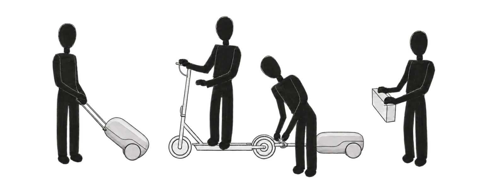

Hands stay free
A rider should not have to carry a bag while steering, braking, or walking the scooter.
Industrial design · Product development · 2026
I designed Ferō to make it easier for students to carry more on their daily scooter commute. The two-wheel trailer carries books, a laptop, and other gear behind the scooter. When the ride ends, students can detach it and roll everything inside.
Drag to rotate · Pinch or scroll to zoom
Project snapshot
700 × 340 × 300 mm
Two-wheel rolling cargo trailer · 3D-printable exterior · modular scooter connection
The brief
I commute by scooter, and there’s only so much I can fit in a backpack. Once I pack my laptop and books, there’s little room for anything bulky.
I wanted the same container to work all the way to my desk. That made detaching, pulling, and opening the trailer just as important as towing it.

Design criteria
A rider should not have to carry a bag while steering, braking, or walking the scooter.
The opening needs to work during a short stop, while keeping contents protected during movement.
The rider needs to know when the hitch is locked. I specified a click-in coupler with a separate backup attachment.
Design direction
A streamlined shell keeps the load contained while the rider moves through the city.
A side sliding roll-top opens the cargo area without requiring a large lid swing or extra clearance.
The sliding cover and removable panel turn the trailer into a temporary tabletop for a laptop or studio tools.
Form development
My first lid swung up on a rear hinge. Opening it meant leaving space behind the trailer every time I parked.
Splitting the lid let me fold it back in sections, but introduced another joint across the top.
I chose slats that slide sideways in a guide. I can reach inside without swinging a panel into the space where I’m standing.
I shortened the body from 870 to 700 mm and gave the nose and tail a similar curve. The black upper shell pulls inward while the orange lower body continues across the full width.
Product system
The hitch is designed to pivot as the scooter turns, leans, or crosses uneven ground. A quick-release coupler lets the rider detach the trailer.
Charcoal fitted padding protects the lower body. Removable dividers organize different loads without protruding into the cargo space.
The slats run in a top guide. I left a small gap for a laptop cable so the cover can stay in place while I work.
A telescoping handle, side handle, and kickstands at both ends help the trailer stand upright when detached.
Rear brake lights, interior lights, anti-slip lines, and four net anchors per side support safer daily use.
Separate printable exterior panels, a lightweight structural chassis, moving wheels, and a full-scale and small-scale version for testing.
Reflection
The lid changed the way I thought about Ferō. Once I pictured parking beside it and taking out a laptop, the space around the trailer mattered as much as the space inside. My next test would be to load a model, pull the trailer through a doorway, and unpack it without shifting the rest of the load.